4Gamers
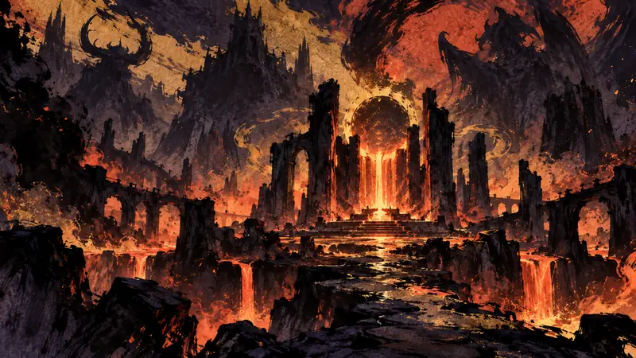
《暗黑破坏神》30周年庆“地狱余烬赛季”9月16日上线！再战迪亚波罗、巴尔、墨菲斯托等历代首领（译）
近20名历代首领与九件经典装备回归，但这场30周年回顾不只是重播往事，还会改写赛季进度与终局玩法，部分内容也会永久保留。
观点：周年活动把熟悉感变成再次登录的理由，也可能把玩家有限的时间绑在季节性窗口里。
先鸦｜黎明快讯
玩家能动性：政策如何限制它、产业如何塑造它、叙事设计如何实现它。
前线
4Gamers

近20名历代首领与九件经典装备回归，但这场30周年回顾不只是重播往事，还会改写赛季进度与终局玩法，部分内容也会永久保留。
观点：周年活动把熟悉感变成再次登录的理由，也可能把玩家有限的时间绑在季节性窗口里。
Gry-Online.pl
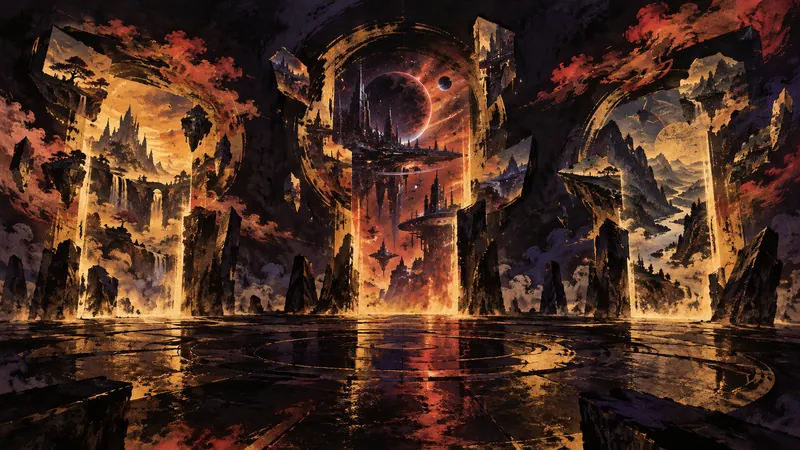
三个系列同周抢进焦点，玩家要看的不只是哪个名字最响亮，也是哪种期待会先占据自己的注意力；这份并列，正把一周的游戏新闻变成一张待追清单。
观点：三个名字同时出现，会为玩家打开想象，也会提前占用未来的游玩时间。
JeuxVideo.com
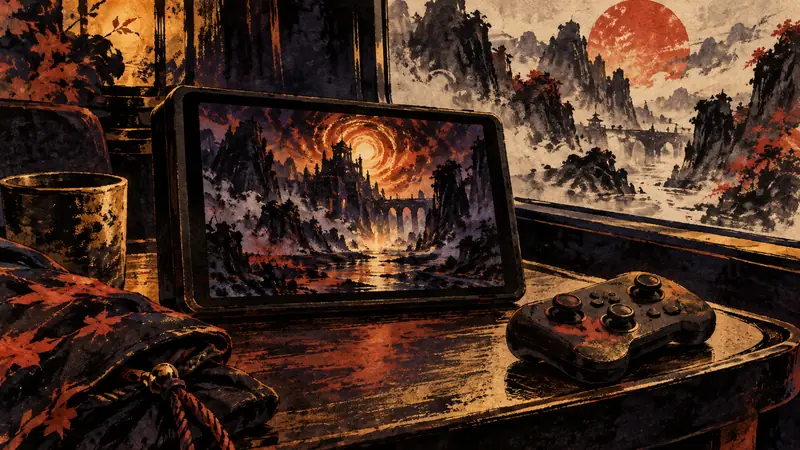
Switch 2 版《暗黑破坏神 IV》画面漂亮、操作顺手，却把最影响刷怪节奏的流畅度押在脆弱的 30 fps 上，掌机与底座模式都没能避开这个代价。
观点：实测把选择从规格猜测拉回到实际游玩感受，让想在掌机上长时间投入的玩家多一个判断依据。
DTF (игры)
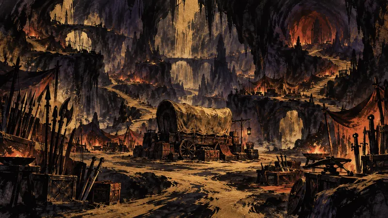
商队可以接任务、挑选伙伴，迪亚布罗也会直接介入世界；《暗黑破坏神 V》的刷宝循环，将由哪些新系统共同撑起？
观点：商队、程序生成地图与更多职业会拓宽玩法安排，也会增加学习与试错时间；选择变多，不代表玩家的能动性就跟着提高。
Jagat Play（印尼，印尼語）
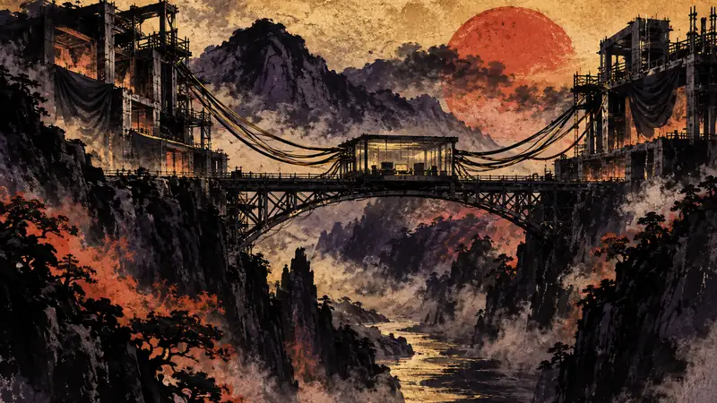
《PHYSINT》距离完成仍有多年，预算可能达到数亿美元；Sony 放手后，Xbox 能否用 Xbox 与 PC 的模式接住这项长期而昂贵的投资？
观点：如果《PHYSINT》真的更换平台，玩家首先失去的是对版本和长期支持的可预期性，而不只是少了一个发布地点。
True Gaming تروجيمنج（沙烏地阿拉伯／泛阿拉伯地區，阿拉伯語）
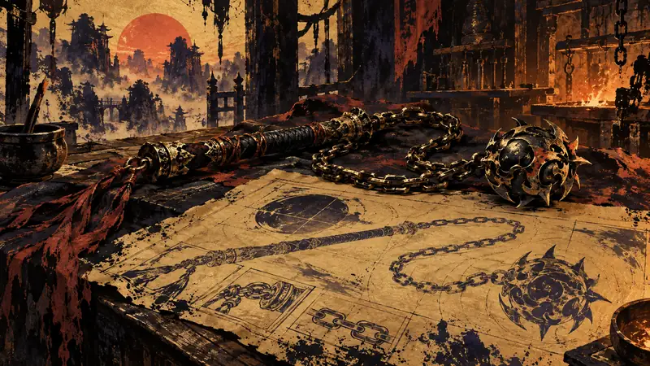
一件原本因技术限制被搁置多年的武器，等到重制版与现代硬件到位后，终于成为 Geralt 下一段冒险的实际选项。
观点：回看链鞭的来历，可以看见内容取舍背后的时间尺度：今天能玩的点子，过去可能因为技术限制而暂时搁置。
True Gaming تروجيمنج（沙烏地阿拉伯／泛阿拉伯地區，阿拉伯語）
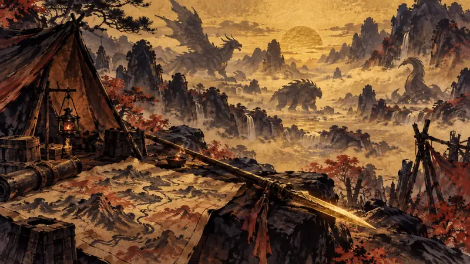
《Ascendance》将在明年推出，在此之前，长枪展示和仍在开发中的Switch 2版本，先让玩家把决定拉回到玩法与等待成本上。
观点：武器展示让玩家可以先根据自己的操作偏好判断是否等待，选择也就落在玩法，而不只是声量。
Jagat Play（印尼，印尼語）
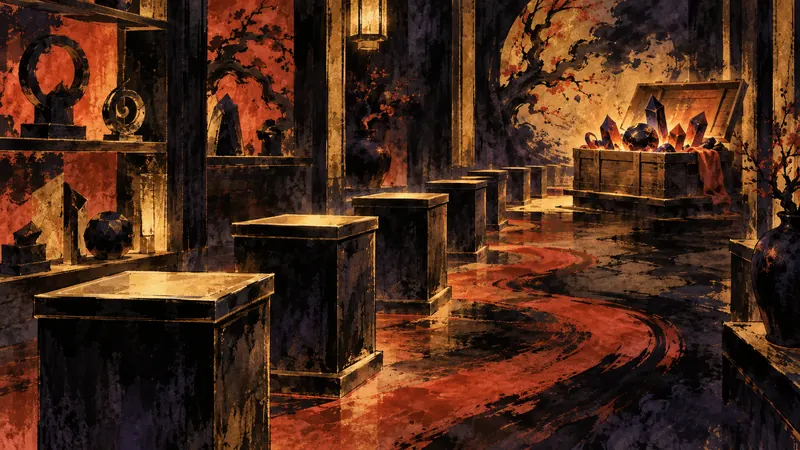
主题主机一度让购买变成速度竞赛，英国补货能否把稀缺性带来的焦虑拉回到更多玩家都能参与的正常选购窗口？
观点：补货让更多玩家重新获得购买机会，却没有改变主题硬件把收藏欲变成竞速的结构。
GamingOnPhone（印度，英語）
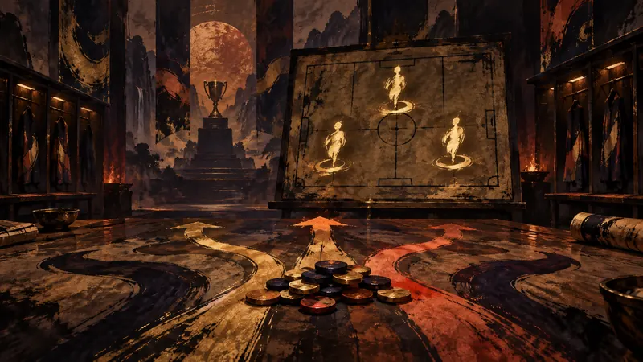
熟悉的2010–11国际米兰名字再次同框，但真正需要衡量的，是情怀能否换来一个值得投入的阵容位置。
观点：三位球星把怀旧变成一次球队配置决策，熟悉的名字带来情感价值，也会带出培养资源的机会成本。
前线
인벤 Inven（韓國，韓語）
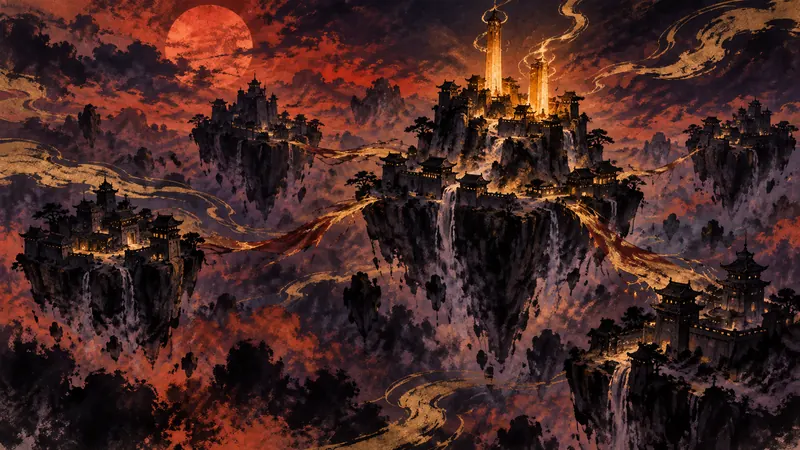
转移前的最后一战，多数城堡仍未易手，克里斯特却靠一次反击拿下两座城，让原本看似固定的势力平衡留下变数，也让转移前的最后检视变成了一场真正的翻盘。
观点：服务器转移会让公会竞争重新受人口与盟友配置影响，因此玩家的投入也带有期限。
인벤 Inven（韓國，韓語）
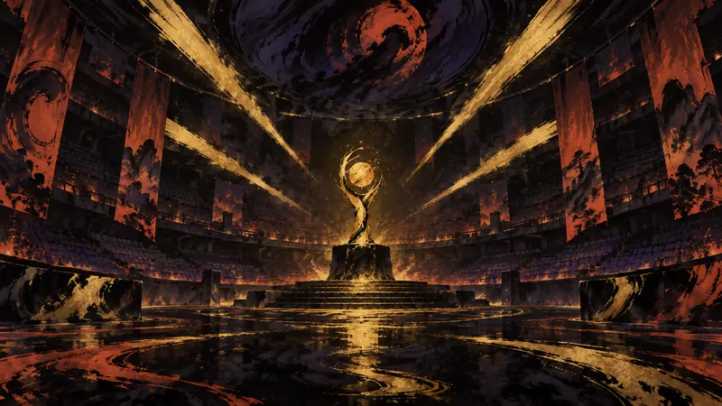
Gen.G 以 3 比 1 蝉联冠军，Ruler 从自我怀疑走到 MVP；这份信心接下来还要在亚运会与世界赛的舞台上接受检验，冠军的意义因此尚未结束。
观点：冠军赛结果为支持者提供了清晰的竞技坐标，却不会替每位观众决定要投入多少时间追完整个赛季。
Polygon
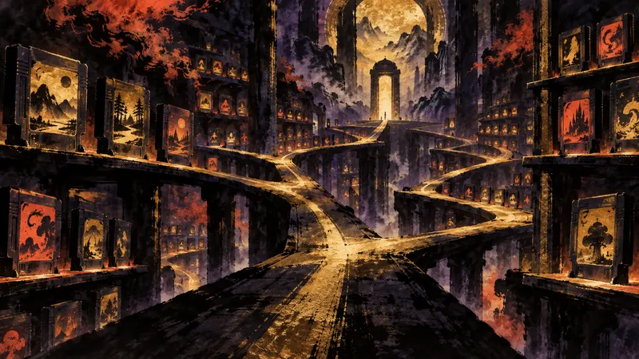
Polygon的经典榜单既是回顾入口，也是取舍宣言：它替20世纪划出一条路线，读者可沿线探索，也可反问谁被留在外面。
观点：排名替玩家省下回顾时间，却也先把“伟大”交给榜单判断。
JeuxVideo.com
熊会被火把逼退，却不是低级装备就能硬扛的敌人；攻略真正要解决的是如何在风险、战利品与出手时机之间取舍，这也是玩家是否值得冒险的关键。
观点：这份攻略把一场可能反复重来的战斗，转化成玩家可以自行安排的准备工作。
JeuxVideo.com
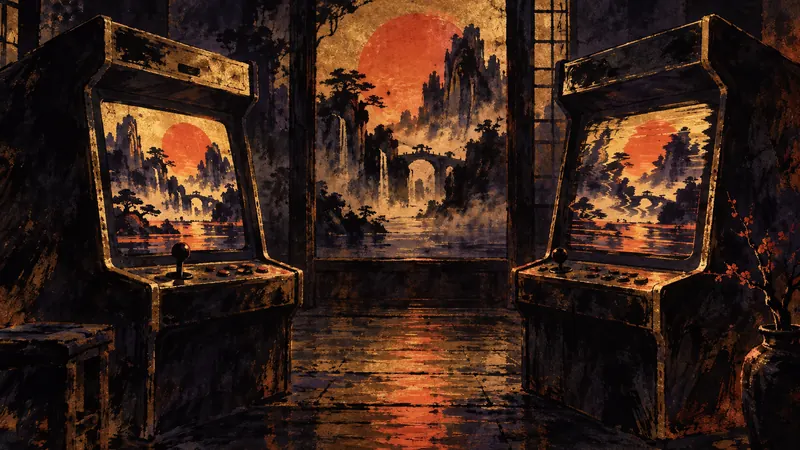
当 DLSS 5 让老游戏获得新的光影效果，代价却是帧率损失超过一半，以及画面可能变形，复古游戏的“原味”便成了真正的争议焦点：玩家究竟是要保存作品，还是接受一种新的观看方式？
观点：这项改造多了一种保留旧作品的方式，却也把“原味”交给可调整、可争论的画面处理。
GamingOnPhone（印度，英語）
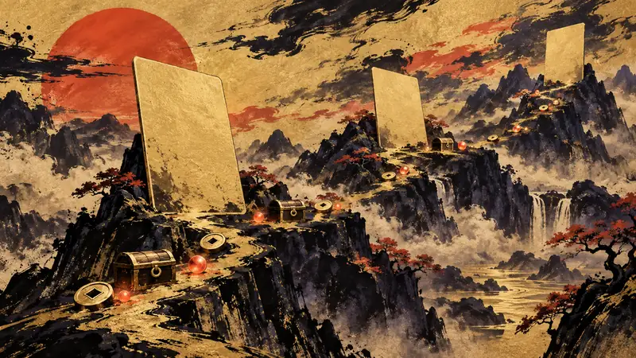
当除了三峰牌局之外还要处理资源获取时，这份整理将《Solitaire Explorer: TriPeaks》的查码时间集中到一个入口。
观点：兑换码让玩家自行决定何时补充资源，短期内能降低寻找成本；长期来看，则会把游玩入口绑定在外部更新和攻略追踪上。